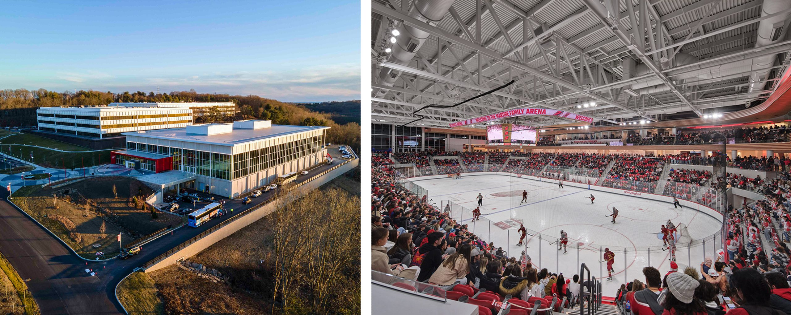

The Martire Family Arena is a 3,600-seat ice hockey arena in Fairfield, Connecticut. It is home to the Sacred Heart Pioneers men's and women's ice hockey teams. The arena opened in January 2023.
https://en.wikipedia.org/wiki/Martire_Family_Arena